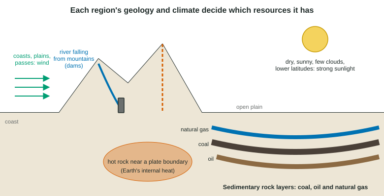

Unit 6 · 10 to 15% of the exam Beta
Unit 6 practice test: Energy Resources and Consumption
twelve questions, every option explained
12 exam-style questions from the unit, free, with an explanation for every option. Most have four answer choices, as on the real exam, and a few ask you to type a calculation with its units; sets share one data table, graph, model or passage. Covers: Renewable and Nonrenewable Resources; Global Energy Consumption; Fuel Types and Uses; Distribution of Natural Energy Resources; Fossil Fuels; Nuclear Power; Energy from Biomass; Solar Energy; Hydroelectric Power; Geothermal Energy; Hydrogen Fuel Cell; Wind Energy; Energy Conservation.

Model or diagram
Saving energy in a home

1. In the diagram, what is the purpose of the shade tree on the sunny side of the house?
- To shade the house in summer
- To make electricity for the house
- To heat the house during the summer
- To store rainwater for the furnace
Show the answer
Conservation landscaping uses trees and windbreaks to shade the house in summer and block cold winds in winter.
- Correct: To shade the house in summer: Right: shade lowers cooling needs.
- To make electricity for the house: Trees do not make electricity.
- To heat the house during the summer: Shade cools; it does not heat.
- To store rainwater for the furnace: Trees do not supply the furnace.
2. According to the diagram, how does a programmable thermostat save energy?
- It makes the furnace burn a cleaner type of fuel
- It stores heat in the walls for use later in the day
- It turns the lights off when the rooms are empty
- It lowers the heating when no one is home or awake
Show the answer
The thermostat lowers the heat at night or while everyone is out, so the furnace runs fewer hours.
- It makes the furnace burn a cleaner type of fuel: It controls timing, not the fuel.
- It stores heat in the walls for use later in the day: It does not store heat.
- It turns the lights off when the rooms are empty: A thermostat controls heating and cooling, not lights.
- Correct: It lowers the heating when no one is home or awake: Right: less heating or cooling when not needed.
3. The diagram lists measures at two scales. Which is a large-scale measure a government could promote to cut gasoline use?
- Installing a programmable thermostat
- Planting a shade tree
- Expanding public transportation
- Adding attic insulation
Show the answer
The banner lists vehicle fuel economy, hybrids and electric vehicles, public transportation and green building design as large-scale measures. Public transportation cuts gasoline use directly.
- Installing a programmable thermostat: A thermostat saves heating energy in one home.
- Planting a shade tree: A shade tree saves cooling energy in one home.
- Correct: Expanding public transportation: Right: public transportation replaces car trips.
- Adding attic insulation: Insulation saves heating energy in one home.
Model or diagram
Energy resources across a landscape

4. According to the diagram, where are coal, oil and natural gas found?
- In layers of sedimentary rock under the plain
- In the hot rock near the plate boundary
- In the mud of the reservoir behind the dam
- In the soil just under the open plain
Show the answer
The diagram shows fossil fuels in sedimentary layers beneath the plain.
- Correct: In layers of sedimentary rock under the plain: Right: fossil fuels lie in sedimentary basins.
- In the hot rock near the plate boundary: Hot rock near the plate boundary is the source of Earth's internal heat.
- In the mud of the reservoir behind the dam: The reservoir stores water to turn turbines at the dam.
- In the soil just under the open plain: The diagram shows the fuels deep in rock layers, not in surface soil.
5. Which energy resource in the diagram depends most on the region's climate rather than its rock?
- Coal
- Natural gas
- Earth's internal heat
- Sunlight
Show the answer
The diagram links strong sunlight to dry, cloud-free, lower-latitude regions: a climate pattern.
- Coal: Coal depends on buried ancient swamps (rock).
- Natural gas: Natural gas depends on sedimentary basins (rock).
- Earth's internal heat: Earth's internal heat depends on plate boundaries (rock).
- Correct: Sunlight: Right: solar energy depends on clouds and latitude.
6. A town is built on the coast shown in the diagram, far from the basin and the mountains. Which local energy source would the diagram suggest it develop first?
- A station using heat from deep hot rock
- A large dam on a steep mountain river
- Wind-driven generators along the coast
- A coal mine dug under the town itself
Show the answer
The diagram marks coasts as windy, while coal, hot rock and steep rivers are elsewhere.
- A station using heat from deep hot rock: Hot rock is near the plate boundary in the mountains.
- A large dam on a steep mountain river: The steep river and dam are in the mountains.
- Correct: Wind-driven generators along the coast: Right: coasts have strong, steady wind.
- A coal mine dug under the town itself: The diagram shows the coal under the basin, not the coast.
7. A town gets its electricity by burning coal. Why is coal classified as nonrenewable even though new plant material is buried in swamps today?
- Coal is mined from underground rock, and a resource taken from rock is classified as nonrenewable
- Swamps today are too wet and too cold for buried plant material to turn into coal
- New coal takes millions of years to form, far longer than a human timescale
- Coal releases carbon dioxide when it burns, and releasing carbon dioxide is what makes a fuel nonrenewable
Show the answer
The classification depends on the rate of replacement compared with the rate of use. Coal does form today, but it takes millions of years, so for people it is a fixed supply.
- Coal is mined from underground rock, and a resource taken from rock is classified as nonrenewable: Being mined does not decide it; what matters is how fast the resource is replaced.
- Swamps today are too wet and too cold for buried plant material to turn into coal: Buried swamp plants are exactly what becomes coal; the problem is the time it takes.
- Correct: New coal takes millions of years to form, far longer than a human timescale: Right: the rate of formation is far slower than the rate of use.
- Coal releases carbon dioxide when it burns, and releasing carbon dioxide is what makes a fuel nonrenewable: Releasing carbon dioxide is a pollution problem, not the reason for the classification; burning wood also releases carbon dioxide and wood is renewable.
8. As a country industrializes, how does its energy use per person usually change, and why?
- It stays the same, as total use is fixed by the size of the population
- It falls, as people move from farms to cities where they share buildings
- It rises, as factories, vehicles and electrified homes use more energy
- It falls, as factories replace the work that people used to do by hand
Show the answer
Industry, motor vehicles, appliances and air conditioning all need energy, so use per person climbs with development.
- It stays the same, as total use is fixed by the size of the population: Use per person changes a great deal with development; population alone does not set it.
- It falls, as people move from farms to cities where they share buildings: City living can use energy efficiently, but total use per person still rises with development.
- Correct: It rises, as factories, vehicles and electrified homes use more energy: Right: industrial and household demand grows with development.
- It falls, as factories replace the work that people used to do by hand: Machines that replace hand labor run on fuel or electricity, so use goes up.
9. Crude oil from a well is sent to a refinery. What happens there?
- It is heated and separated by boiling point into products such as gasoline and diesel
- It is burned to make steam that is sold to nearby factories
- It is mixed with water to make it renewable
- It is pressed into solid blocks that are burned like coal
Show the answer
In fractional distillation, crude oil is heated and its parts separate by boiling point into fuels (gasoline, diesel, jet fuel, heating oil) and materials (asphalt, the raw material for plastics).
- Correct: It is heated and separated by boiling point into products such as gasoline and diesel: Right: refining separates crude oil into products by boiling point.
- It is burned to make steam that is sold to nearby factories: A refinery separates crude oil; it does not just burn it for steam.
- It is mixed with water to make it renewable: Nothing makes a fossil fuel renewable.
- It is pressed into solid blocks that are burned like coal: Oil products are liquids and gases, not pressed blocks.
10. A coal-fired power plant is about 33 percent efficient. Where does most of the remaining energy go?
- Back into the coal pile, where it is burned again later
- Waste heat carried off in cooling water and stack gases
- Into the coal ash that collects in the bottom of the boiler
- Into the electricity lost at the wall outlet of each home
Show the answer
About two thirds of the fuel's energy leaves as heat: warmed cooling water from the condenser and hot gases up the stack. This follows from the second law of thermodynamics.
- Back into the coal pile, where it is burned again later: Energy released as heat cannot be put back into the coal.
- Correct: Waste heat carried off in cooling water and stack gases: Right: waste heat is the largest loss.
- Into the coal ash that collects in the bottom of the boiler: Ash holds very little energy compared with the heat lost.
- Into the electricity lost at the wall outlet of each home: Some energy is lost in power lines, but far less than the waste heat at the plant.
11. What happens during nuclear fission in a reactor?
- Uranium burns in oxygen, releasing carbon dioxide and a lot of heat
- Water molecules in the core break apart into hydrogen and oxygen
- A neutron splits a U-235 nucleus, freeing heat and neutrons
- Two hydrogen nuclei join to form one helium nucleus, releasing heat
Show the answer
A neutron strikes a uranium-235 nucleus, which splits into smaller nuclei, releasing a large amount of heat and 2 or 3 neutrons that can split more nuclei: a chain reaction.
- Uranium burns in oxygen, releasing carbon dioxide and a lot of heat: Fission is not burning and releases no carbon dioxide.
- Water molecules in the core break apart into hydrogen and oxygen: Splitting water is a chemical change, not a nuclear one.
- Correct: A neutron splits a U-235 nucleus, freeing heat and neutrons: Right: splitting heavy nuclei is fission.
- Two hydrogen nuclei join to form one helium nucleus, releasing heat: Joining light nuclei is fusion, which powers the sun, not today's reactors.
12. What is biodiesel made from?
- Natural gas that is cooled until it becomes a liquid
- Vegetable oils, such as soybean oil, or animal fats
- Fermented corn sugar that is distilled into alcohol
- Coal that has been heated and turned into a liquid
Show the answer
Biodiesel is made by reacting vegetable oils (soybean, canola, palm) or animal fats so they can run diesel engines.
- Natural gas that is cooled until it becomes a liquid: Cooled natural gas is liquefied natural gas, a fossil fuel.
- Correct: Vegetable oils, such as soybean oil, or animal fats: Right: plant oils or animal fats.
- Fermented corn sugar that is distilled into alcohol: Fermented and distilled sugar is ethanol.
- Coal that has been heated and turned into a liquid: Liquid coal is a fossil fuel product.